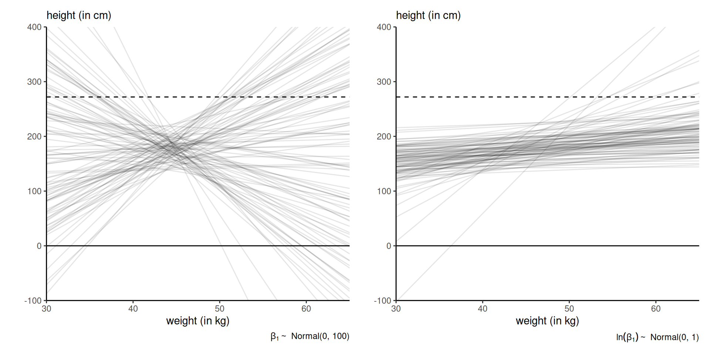
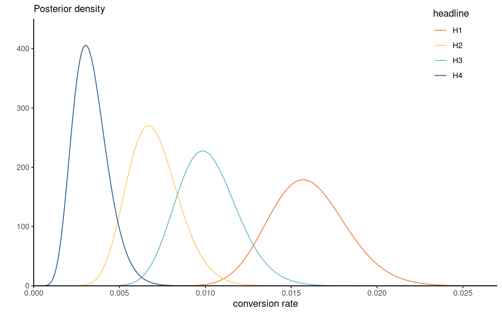

| headline | impressions | clicks |
|---|---|---|
| H1 | 3060 | 49 |
| H2 | 2982 | 20 |
| H3 | 3112 | 31 |
| H4 | 3083 | 9 |
Bayesian modelling
Priors
Léo Belzile
Last compiled Tuesday Apr 1, 2025
Priors
The posterior density is
\[\begin{align*} \color{#D55E00}{p(\boldsymbol{\theta} \mid \boldsymbol{Y})} = \frac{\color{#0072B2}{p(\boldsymbol{Y} \mid \boldsymbol{\theta})} \times \color{#56B4E9}{p(\boldsymbol{\theta})}}{\color{#E69F00}{\int p(\boldsymbol{Y} \mid \boldsymbol{\theta}) p(\boldsymbol{\theta})\mathrm{d} \boldsymbol{\theta}}}, \end{align*}\]
where \[\color{#D55E00}{\text{posterior}} \propto \color{#0072B2}{\text{likelihood}} \times \color{#56B4E9}{\text{prior}}\]
We need to determine a suitable prior.
Impact of the prior
The posterior is a compromise prior and likelihood:
- the more informative the prior, the more the posterior resembles it.
- in large samples, the effect of the prior is often negligible
Controversial?
- No unique choice for the prior: different analysts get different inferences
- What is the robustness to the prior specification? Check through sensitivity analysis.
- Even with prior knowledge, hard to elicit parameter (many different models could yield similar summary statistics)
Choosing priors
Infinite number of choice, but many default choices…
- conditionally conjugate priors (ease of interpretation, computational advantages)
- flat priors and vague priors (mostly uninformative)
- informative priors (expert opinion)
- Jeffrey’s priors (improper, invariant to reparametrization)
- penalized complexity (regularization)
- shrinkage priors (variable selection, reduce overfitting)
Determining hyperparameters
We term hyperparameters the parameters of the (hyper)priors.
How to elicit reasonable values for them?
- use moment matching to get sensible values
- trial-and-error using the prior predictive
- draw a parameter value from the prior \(\boldsymbol{\theta}_0\)
- for each, generate a new observation from the model \(f(y_{\text{new}} \mid \boldsymbol{\theta}_0)\)
Example of simple linear regression
Working with standardized response and inputs \[x_i \mapsto (x_i - \overline{x})/\mathrm{sd}(\boldsymbol{x}),\]
- the slope is the correlation between explanatory \(\mathrm{X}\) and response \(Y\)
- the intercept should be mean zero
- are there sensible bounds for the range of the response?
Example - simple linear regression
Consider the relationship between height (\(Y,\) in cm) and weight (\(X,\) in kg) among humans adults.1
Model using a simple linear regression
\[\begin{align*} Y_i &\sim \mathsf{Gauss}(\mu_i, \sigma^2) \\ \mu_i &= \beta_0 + \beta_1(\mathrm{x}_i - \overline{x}) \\ \beta_0 &\sim \mathsf{Gauss}(178, 20^2) \\ \sigma &\sim \mathsf{unif}(0, 50) \end{align*}\] What about the slope parameter prior \(p(\beta_1)\)?
Priors for the slope
Figure 1: Prior draws of linear regressions with different priors: vague \(\beta_1 \sim \mathsf{Gauss}(0, 100)\) (left) and lognormal \(\ln(\beta_1) \sim \mathsf{Gauss}(0,1)\) (right). Figure 4.5 of McElreath (2020). The Guiness record for the world’s tallest person is 272cm.
Conjugate priors
A prior density \(p(\boldsymbol{\theta})\) is conjugate for likelihood \(L(\boldsymbol{\theta}; \boldsymbol{y})\) if the product \(L(\boldsymbol{\theta}; \boldsymbol{y})p(\boldsymbol{\theta}),\) after renormalization, is of the same parametric family as the prior.
Distributions that are exponential family admit conjugate priors.
A distribution is an exponential family if it’s density can be written \[\begin{align*} f(y; \boldsymbol{\theta}) = \exp\left\{ \sum_{k=1}^K Q_k(\boldsymbol{\theta}) t_k(y) + D(\boldsymbol{\theta}) + h(y)\right\}. \end{align*}\] The support of \(f\) must not depend on \(\boldsymbol{\theta}.\)
Conjugate priors for common exponential families
| distribution | unknown parameter | conjugate prior |
|---|---|---|
| \(Y \sim \mathsf{expo}(\lambda)\) | \(\lambda\) | \(\lambda \sim \mathsf{gamma}(\alpha, \beta)\) |
| \(Y \sim \mathsf{Poisson}(\mu)\) | \(\mu\) | \(\mu \sim \mathsf{gamma}(\alpha, \beta)\) |
| \(Y \sim \mathsf{binom}(n, \theta)\) | \(\theta\) | \(\theta \sim \mathsf{Be}(\alpha, \beta)\) |
| \(Y \sim \mathsf{Gauss}(\mu, \sigma^2)\) | \(\mu\) | \(\mu \sim \mathsf{Gauss}(\nu, \omega^2)\) |
| \(Y \sim \mathsf{Gauss}(\mu, \sigma^2)\) | \(\sigma\) | \(\sigma^{-2} \sim \mathsf{gamma}(\alpha, \beta)\) |
| \(Y \sim \mathsf{Gauss}(\mu, \sigma^2)\) | \(\mu, \sigma\) | \(\mu \mid \sigma^2 \sim \mathsf{Gauss}(\nu, \omega \sigma^2),\) \(\sigma^{-2} \sim \mathsf{gamma}(\alpha, \beta)\) |
Conjugate prior for the Poisson
If \(Y \sim \mathsf{Poisson}(\mu)\) with density \(f(y) = \mu^x\exp(-\mu x)/x!,\) then for \(\mu \sim \mathsf{gamma}(\alpha, \beta)\) with \(\alpha, \beta\) fixed. Consider an i.i.d. sample with mean \(\overline{y}.\) The posterior density is
\[ p(\mu \mid y) \stackrel{\mu}{\propto} \mu^{n\overline{y}} \exp\left(-\mu n\overline{y}\right) \mu^{\alpha-1} \exp(-\beta \mu) \] so must be gamma \(\mathsf{gamma}(n\overline{y} + \alpha, n\overline{y} + \beta).\)
Parameter interpretation: \(\alpha\) events in \(\beta\) time intervals.
Conjugate prior for Gaussian (known variance)
Consider an iid sample, \(Y_i \sim \mathsf{Gauss}(\mu, \sigma^2)\) and let \(\mu \mid \sigma \sim \mathsf{Gauss}(\nu, \sigma^2\tau^2).\) Then, \[\begin{align*} p(\mu, \sigma) &\propto \frac{p(\sigma)}{\sigma^{n+1}} \exp\left\{ -\frac{1}{2\sigma^2}\sum_{i=1}^n (y_{i}-\mu)^2\right\} \exp\left\{-\frac{1}{2\sigma^2\tau^2}(\mu - \nu)^2\right\} \\&\propto \frac{p(\sigma)}{\sigma^{n+1}} \exp\left\{\left(\sum_{i=1}^n y_{i} + \frac{\nu}{\tau^2}\right)\frac{\mu}{\sigma^2} - \left( \frac{n}{2} +\frac{1}{2\tau^2}\right)\frac{\mu^2}{\sigma^2}\right\}. \end{align*}\]
The conditional posterior \(p(\mu \mid \sigma)\) is Gaussian with
- mean \((n\overline{y}\tau^2 + \nu)/(n\tau^2 + 1)\) and
- precision (reciprocal variance) \((n + 1/\tau^2)/\sigma^2.\)
Upworthy examples
- The Upworthy Research Archive (Matias et al., 2021) contains results for 22743 experiments, with a click through rate of 1.58% on average and a standard deviation of 1.23%.
- We consider an A/B test that compared four different headlines for a story.
- We model the conversion rate for each using \(\texttt{click}_i \sim \mathsf{Poisson}(\lambda_i\texttt{impression}_i).\)
We treat \(\texttt{impression}\) as a known offset.
Headlines
Consider an A/B test from November 23st, 2014, that compared four different headlines for a story on Sesame Street workshop with interviews of children whose parents were in jail and visiting them in prisons. The headlines tested were:
- Some Don’t Like It When He Sees His Mom. But To Him? Pure Joy. Why Keep Her From Him?
- They’re Not In Danger. They’re Right. See True Compassion From The Children Of The Incarcerated.
- Kids Have No Place In Jail … But In This Case, They Totally Deserve It.
- Going To Jail Should Be The Worst Part Of Their Life. It’s So Not. Not At All.
A/B test: Sesame street example
Moment matching for gamma distribution
For \(Y \sim \mathsf{gamma}(\alpha, \beta)\) with \(\beta\) the rate parameter, we have \[\begin{align*} \mathsf{E}(Y)=\alpha/\beta, \qquad \mathsf{Va}(Y)=\alpha/\beta^2. \end{align*}\] We can solve for \(\beta =\mathsf{E}_0(\lambda)/\mathsf{Va}_0(\lambda)\) and then use the mean relationship to retrieve $.
Moment matching gives \(\alpha = 1.65\) and \(\beta = 104.44.\)
Posterior distributions for Sesame Street
Figure 2: Gamma posteriors of the conversion rate for the Upworthy Sesame street headline.
Proper priors
Theorem 1 A sufficient condition for a prior to yield a proper (i.e., integrable) posterior density function is that it is (proportional) to a density function.
- If we pick an improper prior, we need to check that the posterior is well-defined.
- The answer to this question may depend on the sample size.
Proper posterior in a random effect model
Consider a Gaussian random effect model with \(n\) independent observations in \(J\) groups
The \(i\)th observation in group \(j\) is \[\begin{align*} Y_{ij} &\sim \mathsf{Gauss}(\mu_{ij}, \sigma^2) \\ \mu_{ij}&= \mathbf{X}_i \boldsymbol{\beta} + \alpha_j, \\ \alpha_j &\sim \mathsf{Gauss}(0, \tau^2)\\ ... \end{align*}\]
Conditions for a proper posterior
- for \(\tau \sim \mathsf{unif}(0, \infty),\) we need at least \(J \geq 3\) ‘groups’ for the posterior to be proper.
- if we take \(p(\tau) \propto \tau^{-1},\) the posterior is never proper.
As Gelman (2006) states:
in a hierarchical model the data can never rule out a group-level variance of zero, and so [a] prior distribution cannot put an infinite mass in this area
Improper priors as limiting cases
We can view the improper prior as a limiting case \[\sigma \sim \mathsf{unif}(0, t), \qquad t \to \infty.\]
The Haldane prior for \(\theta\) in a binomial model is \(\theta^{-1}(1-\theta)^{-1},\) a limiting \(\mathsf{Be}(0,0)\) distribution.
The improper prior \(p(\sigma) \propto \sigma^{-1}\) is equivalent to an inverse gamma \(\mathsf{inv. gamma}(\epsilon, \epsilon)\) when \(\epsilon \to 0.\)
The limiting posterior is thus improper for random effects scales, so the value of \(\epsilon\) matters.
MDI prior for generalized Pareto
Let \(Y_i \sim \mathsf{GP}(\sigma, \xi)\) be generalized Pareto with density \[f(x) = \sigma^{-1}(1+\xi x/\sigma)_{+}^{-1/\xi-1}\] for \(\sigma>0\) and \(\xi \in \mathbb{R},\) and \(x_{+} =\max\{0, x\}.\)
Consider the maximum data information (MDI) \[p(\xi) \propto \exp(-\xi).\]
Since \(\lim_{\xi \to -\infty} \exp(-\xi) = \infty,\) the prior density increases without bound as \(\xi\) becomes smaller.
Truncated MDI for generalized Pareto distribution
The MDI prior leads to an improper posterior without modification.
Figure 3: Unscaled maximum data information (MDI) prior density.
If we restrict the range of the MDI prior \(p(\xi)\) to \(\xi \geq -1,\) then \(p(\xi + 1) \sim \mathsf{expo}(1)\) and posterior is proper.
Flat priors
Uniform prior over the support of \(\theta,\) \[p(\theta) \propto 1.\]
Improper prior unless \(\theta \in [a,b]\) for finite \(a, b.\)
Flat priors for scale parameters
Consider a scale parameter \(\sigma > 0.\)
- We could truncate the range, e.g., \(\sigma \sim \mathsf{unif}(0, 50),\) but this is not ‘uninformative’, as extreme values of \(\sigma\) are as likely as small ones.
- These priors are not invariant: if \(p\{\log(\sigma)\} \propto 1\) implies \(p(\sigma) \propto \sigma^{-1}\) so can be informative on another scale.
Vague priors
Vague priors are very diffuse proper prior.
For example, a vague Gaussian prior for regression coefficients on standardized data, \[\boldsymbol{\beta} \sim \mathsf{Gauss}_p(\mathbf{0}_p, 100\mathbf{I}_p).\]
- if we consider a logistic regression with a binary variable \(\mathrm{X}_j \in \{0,1\},\) then \(\beta_j =5\) gives odds ratios of 150, and \(\beta_j=10\) of around 22K…
Invariance and Jeffrey’s prior
In single-parameter models, the Jeffrey’s prior \[p(\theta) \propto |\imath(\theta)|^{1/2},\] proportional to the square root of the determinant of the Fisher information matrix, is invariant to any (differentiable) reparametrization.
Jeffrey’s prior for the binomial distribution
Consider \(Y \sim \mathsf{binom}(1, \theta).\) The negative of the second derivative of the log likelihood with respect to \(p\) is \[ \jmath(\theta) = - \partial^2 \ell(\theta; y) / \partial \theta^2 = y/\theta^2 + (1-y)/(1-\theta)^2. \]
Since \(\mathsf{E}(Y)=\theta,\) the Fisher information is \[\imath(\vartheta) = \mathsf{E}\{\jmath(\theta)\}=1/\theta + 1/(1-\theta) = 1/\{\theta(1-\theta)\}.\] Jeffrey’s prior is therefore \(p(\theta) \propto \theta^{-1/2}(1-\theta)^{-1/2},\) a conjugate Beta prior \(\mathsf{Be}(0.5,0.5).\)
Invariant priors for location-scale families
For a location-scale family with location \(\mu\) and scale \(\sigma,\) the independent priors \[\begin{align*} p(\mu) &\propto 1\\ p(\sigma) &\propto \sigma^{-1} \end{align*}\] are location-scale invariant.
The results are invariant to affine transformations of the units, \(\vartheta = a + b \theta.\)
Penalized complexity priors
Simpson et al. (2017) consider a principled way of constructing priors that penalized model complexity for stable inference and limit over-specification.
Computes Kullback–Leibler divergence between \(f\) and base model \(f_0\) densities, builds an exponential prior on the distance scale and backtransform.
The resulting prior is scale-invariant, but it’s derivation is nontrivial.
Penalized complexity prior for random effect scale
If \(\alpha_j \sim \mathsf{Gauss}(0, \zeta^2),\) the penalized complexity prior for the scale \(\zeta \sim \mathsf{expo}(\lambda).\)
Elicit \(Q,\) a high quantile of the standard deviation \(\zeta\) with tail probability \(\alpha\) and set \(\lambda = -\log(\alpha/Q).\)
Priors for scale of random effects
The conjugate inverse gamma prior \(p(\zeta^2) \sim \mathsf{inv. gamma}(\alpha, \beta)\) is such that the mode for \(\zeta^2\) is \(\beta/(1+\alpha).\)
Often, we take \(\beta=\alpha = 0.01\) or \(0.001,\) but this leads to near-improper priors, so small values of the parameters are not optimal for ‘random effects’.
The inverse gamma prior cannot provide shrinkage or allow for no variability between groups.
Priors for scale of random effects
A popular suggestion, due to Gelman (2006), is to take a centered Student-\(t\) distribution with \(\nu\) degrees of freedoms, truncated over \([0, \infty)\) with scale \(s.\)
- since the mode is at zero, provides support for the base model
- we want small degrees of freedom \(\nu,\) preferable to take \(\nu=3\)? Cauchy model (\(\nu=1\)) still popular.
Prior sensitivity
Does the priors matter? As robustness check, one can fit the model with
- different priors function
- different hyperparameter values
Costly, but may be needed to convince reviewers ;)
Distraction from smartwach
We consider an experimental study conducted at Tech3Lab on road safety.
- In Brodeur et al. (2021), 31 participants were asked to drive in a virtual environment.
- The number of road violation was measured for 4 different type of distractions (phone notification, phone on speaker, texting and smartwatch).
- Balanced data, random order of tasks
Poisson mixed model
We model the number of violations, nviolation as a function of distraction type (task) and participant id. \[\begin{align*}
\texttt{nviolation}_{ij} &\sim \mathsf{Poisson}(\mu_{ij})\\
\mu_{ij} &= \exp(\beta_{j} + \alpha_i),\\
\beta_j &\sim \mathsf{Gauss}(0, 100), \\
\alpha_i &\sim \mathsf{Gauss}(0, \tau^2).
\end{align*}\]
Specifically,
- \(\beta_j\) is the coefficient for
task\(j\) (distraction type), - \(\alpha_i\) is the random effect of participant \(i.\)
Priors for random effect scale
Consider different priors for \(\tau\)
- flat uniform prior \(\mathsf{unif}(0,10)\)
- conjugate inverse gamma \(\mathsf{inv. gamma}(0.01, 0.01)\) prior
- a truncated Student-\(t\) on \([0, \infty)\) with \(\nu=3\) degrees of freedom, \(\mathsf{Student}_{+}(0,1,3)\)
- a penalized complexity prior such that the 0.95 percentile of the scale is 5, corresponding to \(\mathsf{expo}(0.6).\)
Sensitivity analysis for smartwatch data
Figure 4: Posterior density of \(\tau\) for four different priors. The circle denotes the median and the bars the 50% and 95% percentile credible intervals.
Basically indistinguishable results for the random scale..
Eight schools example
Average results on SAT program, for eight schools (Rubin, 1981).
The hierarchical model is
\[\begin{align*} Y_i &\sim \mathsf{Gauss}(\mu + \eta_i, \sigma_i^2)\\ \mu &\sim \mathsf{Gauss}(0, 100)\\ \eta_i & \sim \mathsf{Gauss}(0, \tau^2) \end{align*}\] Given the large sample in each school, we treat \(\sigma_i\) as fixed data by using the sample standard deviation.
Sensibility analysis for eight schools example
Figure 5: Posterior density of the school-specific random effects standard deviation \(\tau\) under different priors.
References
Brodeur, M., Ruer, P., Léger, P.-M., & Sénécal, S. (2021). Smartwatches are more distracting than mobile phones while driving: Results from an experimental study. Accident Analysis & Prevention, 149, 105846. https://doi.org/10.1016/j.aap.2020.105846
Gelman, A. (2006). Prior distributions for variance parameters in hierarchical models (comment on article by Browne and Draper). Bayesian Analysis, 1(3), 515–534. https://doi.org/10.1214/06-ba117a
Matias, J. N., Munger, K., Le Quere, M. A., & Ebersole, C. (2021). The Upworthy Research Archive, a time series of 32,487 experiments in U.S. media. Scientific Data, 8(195). https://doi.org/10.1038/s41597-021-00934-7
McElreath, R. (2020). Statistical rethinking: A Bayesian course with examples in R and STAN (2nd ed.). Chapman; Hall/CRC.
Rubin, D. B. (1981). Estimation in parallel randomized experiments. Journal of Educational Statistics, 6(4), 377–401. https://doi.org/10.3102/10769986006004377
Simpson, D., Rue, H., Riebler, A., Martins, T. G., & Sørbye, S. H. (2017). Penalising model component complexity: A principled, practical approach to constructing priors. Statistical Science, 32(1), 1–28. https://doi.org/10.1214/16-sts576